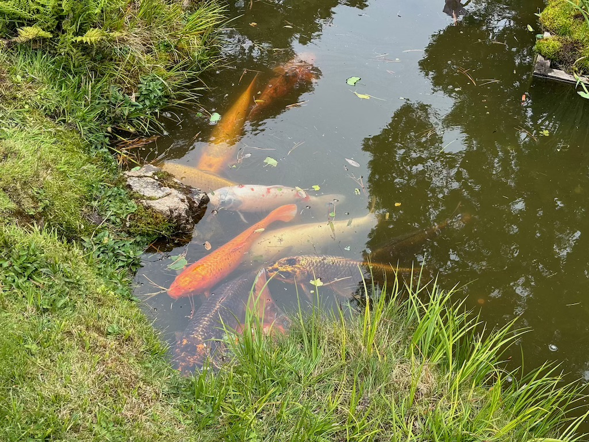

2nd to 4th August
San Francisco, one of the iconic cities of the USA. We arrived around midday and checked in to an AirBnB in the Sunset District. Although it was a house share booking the owners had converted their basement into an independent flat with bathroom and kitchen. 2 bedrooms shared this space and our neighbor for our visit was quite the character. A middle aged man between houses was our neighbor and advised we went to a local mushroom festival. Not being the types to enjoy that sort of thing we politely declined.
Heading into town we first visited Golden Gate park. These steps lead us to the viewpoint at the top of Strawberry Hill.

The visibility, bad at the base of the climb, sadly did not improve. We learnt online that the peninsula San Francisco is built on is prone to low hanging cloud like this. Locals have named it Karl and we discovered during our time here Karl even has an Instagram account. Thanks to him this was our view from the top.

Heading further into the park we found a Japanese garden. The Japanese Tea Garden (to be specific), set up in 1894 is the oldest Japanese garden in the United States. Originally built as part of a World's Fair, the California Midwinter International Exposition. In contrast to the western design of the city the garden has pagodas and a tea house.

A fun shaped "Taiko Bashi", or drum bridge arches over one of the rivers running through the park. Lots of people were enjoying taking quirky photos of themselves atop the steep steps.

Koi fish could be seen throughout the bodies of water here, close enough to examine their intricate scales.
Here is a photo of the pagoda situated in the center of the park. The paths nearest the structure were closed so this is as close as we could get. Blending in with the well kept green trees and bushes the red and yellow colours looks beautiful, even in this dreary weather.

After exploring the park we headed down to Sutro Baths, a small cove in the North West part of the city. To the right of the bay we found a small passage through the rock to a smaller cove again, beyond this there was not much to do here. A couple were taking wedding photos in the area, but it has to be said - they picked the wrong day to do this. The entire time my girlfriend and I joked how this beach was as miserable as british beaches in the winter.

Just look how spooky and uninviting the forest next to the beach is!

Needless to say we gave up on the day and headed home for an early night.
Now from my research of visiting San Francisco I read a lot of recommendations for cycling over the Golden Gate bridge. This seems to be an iconic thing to do here and us being the active type we headed to Sports Basement Presidio, hired some bikes and got on the cycle path. Until you reach the other side of the bridge the route is entirely on dedicated bike lanes, a really nice break from the highways and road-prioritized cities we've been seeing so far. As you can see below we still had Karl with us making this image of the bike lane with the bridge in the background rather underwhelming.

Like magic on the other side of the bridge the fog cleared into a beautiful sunny day. This image captures that exact moment between cloud and blue sky.

From here we cycled down into the stunning yet quaint town of Sausalito and ordered coffee at Equator Coffees. Sitting outside sipping a cappucchino and watching fellow cyclists roll by was a lovely way to spend the day.
On our way back Karl again returned. He seems to enjoys sitting exactly over the city and bridge. This was the best photo and view of the bridge we got while we stayed in San Francisco.
Back in town and the sun has come out. Very often we saw these self driving taxis whizzing around the city. The most off-putting thing about them is the cameras. The huge lumps and bumps all over the car make them very distinct, as well as the spinning turret-esk one on the top. As the sunlight catches on the lens it's slightly blinding. Regardless they didn't seem to take a wrong turn once so thumbs up from me.

On our way towards Fishermans Wharf we stop in a small shop to get a couple of sweet and more importantly ice cold drinks. I mention to the man as I pay that I'm collecting some of the quarters as I travel, aiming to get every state. He responds by emptying all the quarters in the cash register saying I could swap any I needed with the non-commemorative ones I had! A very nice gesture from him which I'll never forget!
We've at Fishermans Wharf now and are immediately giving way to a beautiful old tram that seems to run along the waterfront here. My girlfriend often talks about how much I enjoyed the trams in San Francisco and I can confidently say this is the prettiest one I saw. Stunning!
From here you can see the famous Alcatraz prison on it's isolated island in the middle of the bay. I think you that you can book boat tours that take you out to it. Not being huge fans of historic detention centers we didn't visit, maybe next time.

The Wharf feels a little like a British seaside promenade or pier. Little shops, ice cream stalls and eateries litter the sides of the pedestrianized walkways between the different piers.
By far my biggest recommendation when visiting San Francisco is to get a Sourdough loaf from a Boudin bakery - a French started local bakery in the city. A huge one fit to serve hoards of tourists is situated right in the center of the Wharf and this is a purchase I'd recommend regardless of the price tag (the loaf was about $10!). Delicious and hearty, the bread we bought was the first thing we spoke about with family about San Francisco.

From here we took the Greenwich Steps up to Coit tower and got a brilliant view of the San Francisco skyline. Being one of the 7 hills of San Francisco it gave us vision right across the bay and far South into the city. Here's the view at the base of the tower facing South along Kearny Street. If you have ever seen the Sony Bravia "Balls" advert, featuring 250,000 bouncy balls rolling, bouncing and flying down a hill, this is the hill they filmed it on.

On our final day before heading South we visited the Palace of Fine Arts. It was originally built for the 1915 Panama–Pacific International Exposition to exhibit works of art and after being rebuilt in the 60s and 70s it's the only remaining structure from the event.
It really does look fantastically out of place, like a slice of the Roman empire situated miles from the Mediterranean. It's a quiet attraction with few tourists relative to the other sites we visited which seems a shame to me - the structure is very impressive and definitely worth a visit. If you ask me that couple taking photos at Sutro Baths should have come here!

After a few photos and a relaxing walk we headed back to our car and said goodbye to San Francisco. Definitely up there with one of the most walkable, cultural and beautiful cities I've visited so far.
With our half eaten loaf of Boudin sourdough we hit the road; Click the link to head south along Pacific Coast 1 with us. Otherwise return home